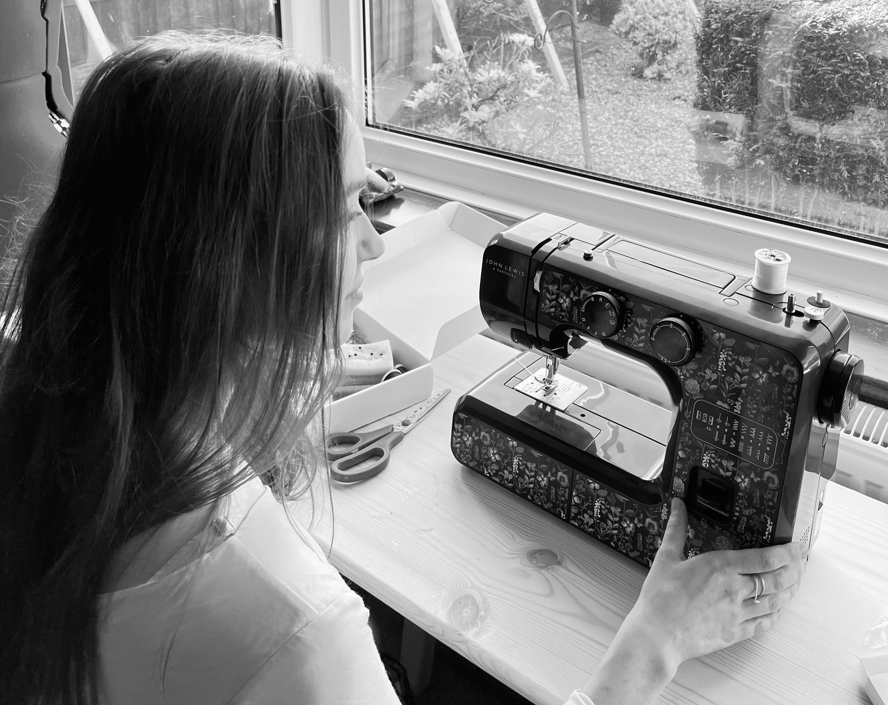
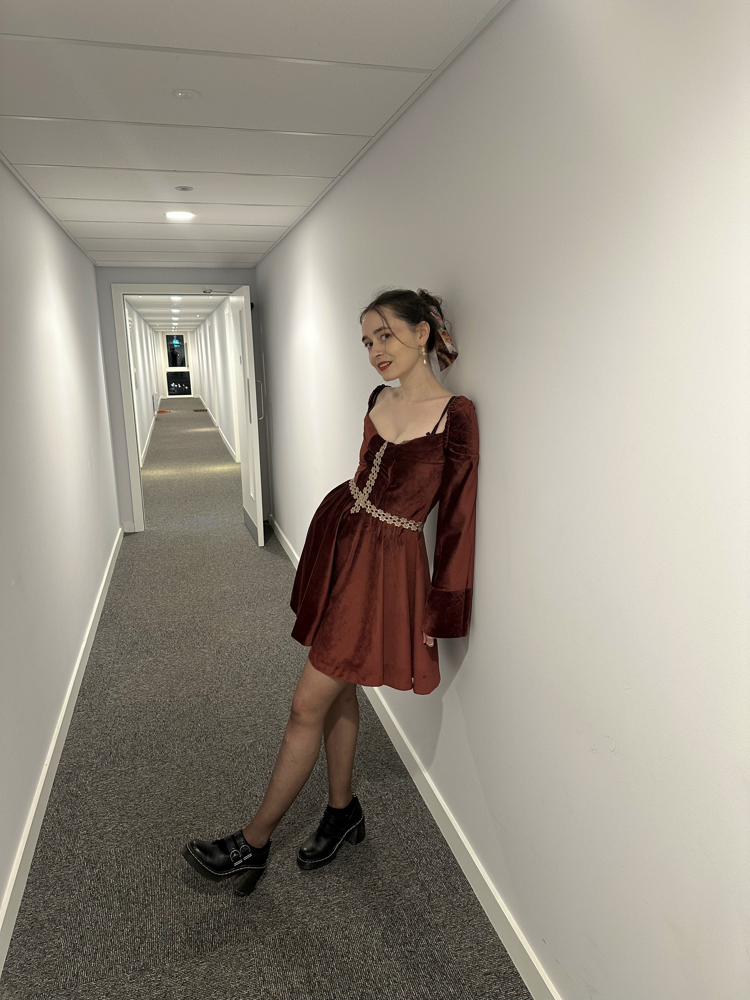
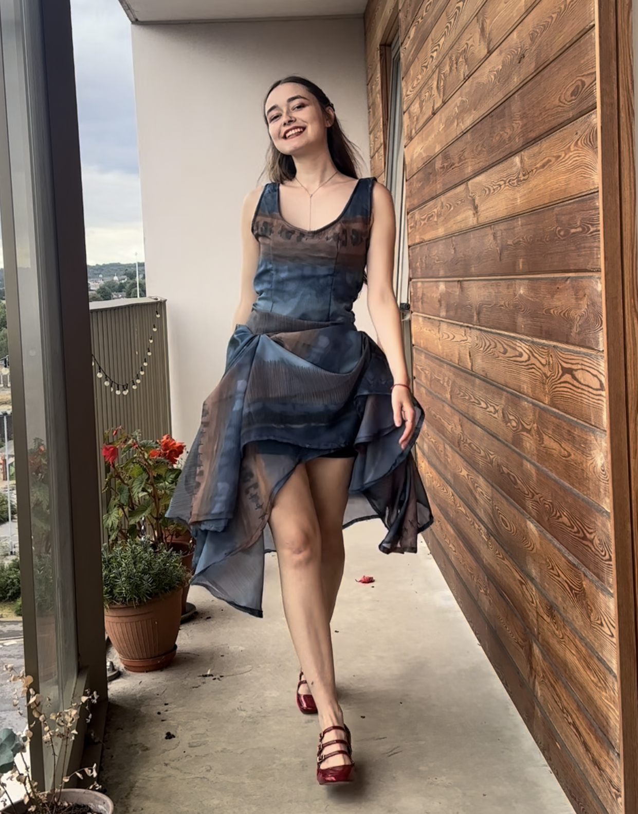
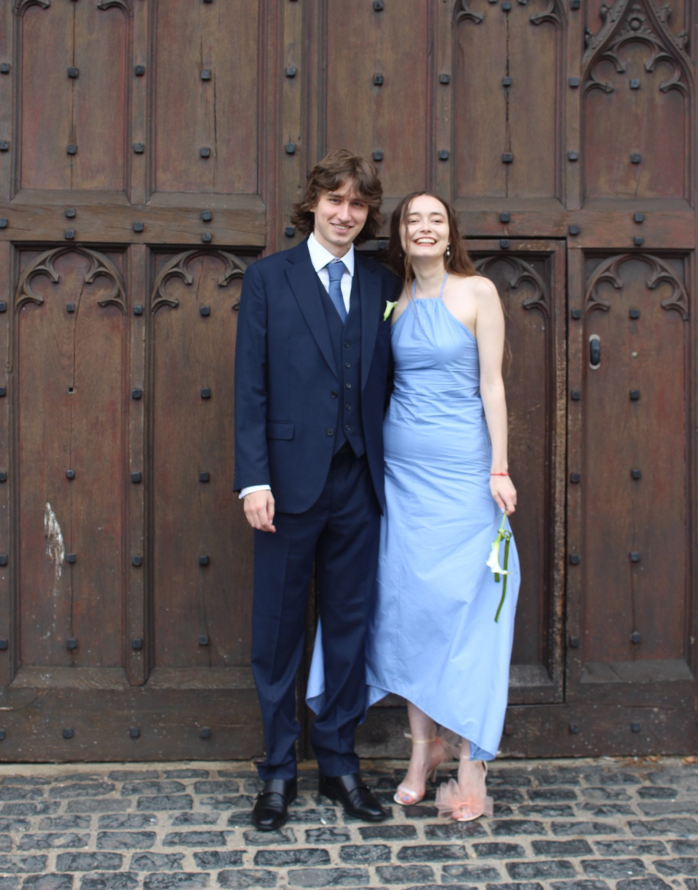

Making sustainable fashion

These clothes are made by me, using local / recycled materials.

e.g., curtains were used to make this dress.
Clothes should last more than a month.

Clothes should be valued.